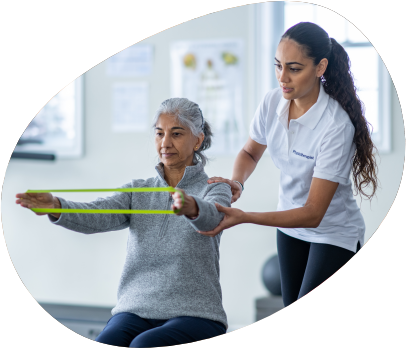
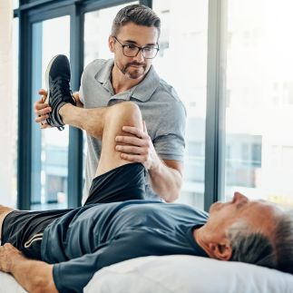
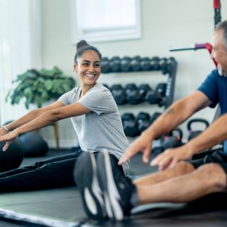
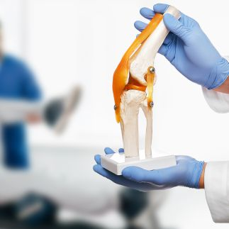

Get In Touch
Have questions about Bachelor of Physiotherapy (BPT) admissions?
Share a few details and our admissions counsellors will walk you through eligibility, fees, scholarships and the application timeline — no obligation.
- Fast Response — a counsellor calls back within 24 hours.
- One-on-One Guidance — personalised help with eligibility and documentation.
- No Obligation — ask questions before you decide to apply.
Fill this in and we'll reach out shortly.
Overview
Bachelor of Physiotherapy (BPT)
Embark on a rewarding journey with the Bachelor of Physiotherapy program at PES University, a comprehensive course designed to equip students with the essential skills and knowledge needed to excel in the field of physiotherapy. This program is meticulously crafted to blend theoretical learning with practical experience, ensuring students are well-prepared to navigate the real world of physical healthcare.
Students will study core biomedical, behavioural, foundational physiotherapy and healthcare subjects within a competency-based curriculum. The programme integrates classroom learning, practical work, simulation and progressive clinical education
Students develop competencies in examination, assessment, evaluation and physiotherapy management, together with communication, evidence-based practice, ethics and interprofessional care. Clinical learning progresses from observation and guided practice to supervised clinical responsibility.
Graduates are prepared to provide physiotherapy services that support movement, function, participation and quality of life across a range of healthcare and community settings challenges. They will be well-positioned to make a meaningful difference in healthcare settings, sports organizations, private practices, and beyond, steering the course towards a healthier and more active society. Join the program and navigate the path to becoming a skilled and compassionate physiotherapist, dedicated to fostering physical well-being and enhancing lives.



Eligibility
Candidates must have passed 10+2 or equivalent with Physics, Chemistry & Biology (or Botany & Zoology), with 50% aggregate in PCB and a pass in English.
SC/ST/OBC-NCL and PwBD/PwD candidates: minimum 40% in PCB; English pass required for all categories.
About the Programme
Why Study this Program at PES University?
Well qualified and experienced Doctors
PES University medical facility and college has the most well qualified and experienced doctors working on campus which will be a great advantage for all our students
Higher Studies Options
PES University will provide option for higher education for its students with benefits after their UG education as we have a full plethora of courses across domains to offer.
State-of-the-Art Facilities
PES University Electronic City campus where the program is offered has state-of-the-art facilities including:
- Cutting-edge teaching labs
- Physiotherapy programme facilities and clinical learning infrastructure
- Procedure centres relevant to applicable specializations
- Medical equipment and teaching resources
- Library with digital databases
- Multidisciplinary research facilities
- Hostel facilities for boys and girls
- Transportation facilities
- Sports and recreation facilities on campus
- 1000 bed General Hospital and 300 bed Super-Speciality Hospital: Students have access to the clinical environment of the PES University Electronic City campus, including the hospital facilities, for practical and clinical learning as applicable to the programme and institutional arrangements.
- Compulsory 1-Year Rotatory Internship
- Career & Placement Assistance: PES University provides career and placement assistance through its centralised placement cell, including training in soft skills, aptitude, etiquette and resume building. Placement opportunities are subject to employer requirements and selection processes.
- Entrepreneurship Opportunities: PES University has a full-fledged Centre for Innovation and Entrepreneurship (CIE), which encourages the students to pursue the path of entrepreneurship through specific courses, bootcamps and Industry exposure activities. PES University also has PESU Venture Labs to fund the business ventures by our students.
- Strong Alumni Network: PES University has a very strong Alumni network with thousands of successful alumni working in different areas around the globe. PES University will connect these alumni to all its existing students through its Alumni cell and our existing students can leverage the benefits of the professional alumni network of PES.
Is It For You?
Who should pursue this Program?
The Bachelor of Physiotherapy program is an ideal choice for individuals who are passionate about health, wellness, and making a tangible difference in people’s lives. If you have a keen interest in the human body, its mechanics, and the science behind physical healing and rehabilitation, this program will provide the comprehensive education and practical experience you need. It's perfect for those who possess empathy, patience, and excellent communication skills, as physiotherapists work closely with patients, understanding their ailments and guiding them through the recovery process.
The program is also suitable for individuals seeking a dynamic and rewarding career, as it offers diverse opportunities to work in various settings, including hospitals, sports organizations, and private practices. Embark on the Bachelor of Physiotherapy program if you aspire to empower individuals to lead healthier, more active lives by providing expert care, support, and rehabilitation services. Your journey towards becoming a skilled and compassionate healthcare professional begins here.
Placements
Placement Opportunities & Career Assistance
PES University provides career and placement assistance through the centralised placement cell, along with training in soft skills, aptitude, etiquette and resume building. These services are intended to support students in exploring employment opportunities after graduation; placement is subject to employer requirements and selection processes.
Graduates may pursue opportunities in hospitals, healthcare networks, research centres, private clinics, government healthcare organisations and educational settings, subject to applicable professional requirements.
Some of the prospective organizations where the students can build their career after graduating are as follows…
Typical employment settings:Hospitals, healthcare networks, medical research centres, private clinics and surgical centres, government healthcare organisations and educational institutions.
- Hospitals
- Healthcare Networks
- Medical Research Centres
- Medical Equipment Companies
- Private Clinics and Surgical Centres
- Government Healthcare Organisations
- Educational Institutions as Educators
Curriculum
Year-wise Curriculum Structure
NCAHP Competency-Based Curriculum
Years 1 and 2 | Annual pattern
- Human Anatomy
- Human Physiology
- Biochemistry
- Fundamentals of Exercise Modalities
- Fundamentals of Electro Physical Agents
- Psychology & Sociology
- Fundamentals of Healthcare Delivery System in India
- English
- Information Technology
- Clinic Orientation
- Pathology & Microbiology
- Pharmacology
- Public Health & Health Promotion
- Emergency Care and Life Support Skills
- Exercise Therapy
- Electrotherapy
- Biomechanics & Kinesiology
- Yoga and Systems of Medicine
- Clinical Observation
NCAHP Curriculum - Years 3 & 4
Clinical, diagnostic, research and professional development
- General Medicine and Pediatrics
- General Surgery
- Orthopedics
- Physiotherapy in Adult & Pediatric Medical and Surgical Conditions
- Physiotherapy in Adult & Pediatric Orthopedic Conditions
- Physical & Functional Diagnosis & Prescription
- Research Methodology, Biostatistics & Evidence-Based Practice
- Clinical Education
- Neurology, Psychiatry & Neurosurgery
- Physiotherapy in Adult & Pediatric Neurological and Neurosurgical Conditions
- Cardiothoracic Diseases & Surgeries
- Physiotherapy in Adult & Pediatric Cardiothoracic and Surgical Conditions
- Sports Physiotherapy & Exercise Prescription
- Physiotherapy Ethics, Medico-Legal Aspects, Management & Administration
- Community Physiotherapy & Rehabilitation
- Project Work Orientation
- Clinical Rotation
Compulsory Rotatory Internship
The internship is completed in the institute hospital or affiliated/approved hospitals. NCAHP requires a stipend as prescribed by the State Council, mandatory BLS training and a two-month rural posting as part of the internship. Up to four months may be completed as externship in a State Council-approved institute.
Internship includes rotation through clinical areas and maintenance/assessment of the prescribed logbook and training records.
Practical, laboratory and clinical-learning components form part of the programme as prescribed by the NCAHP curriculum.
The detailed scheme of hours, credits, assessments and clinical requirements is governed by the latest applicable NCAHP curriculum and university regulations.
Careers
Future Career Prospects after completing the Program
Career pathways for BPT graduates span clinical practice, sports, paediatrics, geriatrics, orthopaedics, research, education, community and corporate wellness settings, subject to applicable registration and professional requirements.
Sports Physiotherapist
Collaborate with sports teams or athletes to prevent injuries, provide immediate care for acute injuries, and design rehabilitation programs to ensure a safe return to activity.
Clinical Physiotherapist
Work in healthcare settings such as hospitals and clinics, providing direct care to patients with various physical ailments, helping improve their mobility and alleviate pain.
Paediatric Physiotherapist
Specialize in treating infants and children with developmental, neuromuscular, and orthopaedic conditions, enhancing their motor functions and improving quality of life.
Geriatric Physiotherapist
Focus on addressing the unique needs of the elderly population, assisting in managing conditions like arthritis, osteoporosis, and Alzheimer's disease.
Orthopaedic Physiotherapist
Work with patients suffering from musculoskeletal conditions, developing tailored programs to restore function and mobility.
Researcher or Academician
Engage in research to advance the field of physiotherapy or take up a teaching position in academic institutions, imparting knowledge and skills to aspiring physiotherapists.
Consultant in Corporate Wellness
Work with corporations to develop workplace wellness programs, focusing on ergonomics, injury prevention, and promoting overall employee well-being.
Entrepreneurship / Private Practice
Graduates may pursue entrepreneurship and private physiotherapy practice, subject to applicable registration, professional and local regulatory requirements.
About the Programme
Programme Highlights
These highlights emphasize the program's commitment to providing a comprehensive, practical, and enriching educational experience, preparing students to excel in the field of physiotherapy.

NCAHP Competency-Based Curriculum
- The programme follows the NCAHP Competency-Based Curriculum for Physiotherapy and integrates foundational sciences, physiotherapy sciences, clinical education, research, ethics and community rehabilitation.
Progressive Clinical Education
- Clinical learning progresses from observation and guided practice to supervised clinical responsibility across the programme, with clinical rotation in the fourth year.


Compulsory 1-Year Rotatory Internship
- After the four academic years, students undertake a one-year full-time rotatory internship in approved clinical settings, with prescribed BLS training and rural/community posting requirements.
Financial Support
Merit scholarships, awarded on performance
Over ₹140 crores in merit scholarships have been given to PES University students since 2014.
Merit Scholarships
Awarded on CGPA / SGPAProf. MRD Scholarships
Merit Certificate + 50% Tuition Fee Refund for Top 5% of the Students based on their CGPA.
Prof. CNR Rao Scholarships
Merit Certificate + 40% Tuition Fee Refund for the next 20% of the Students based on their SGPA.
Distinction Awards
Merit Certificate for Students securing 7.75+ SGPA.
PES Loyalty Program
Awarded on family / institutional ties, every year of studyPES Employees
Children of full-time staff, 5+ years employment.
PES Institution Students
Graduates of any PES institution or sister concern.
Siblings of Students
Siblings of currently enrolled PES students.
Alumni Family
Siblings and children of PES University alumni.
University Highlights
Recognition beyond the programme
The accreditations and rankings behind PES University as a whole.
University in Karnataka
Among new universities under 5 years, ranked by KSURF.
NAAC Accredited
PES University holds NAAC's top-grade accreditation nationally.
B-School in Karnataka
Times of India B-School Rankings, 2021.
Most Preferred B-School
Second only to IIM Bangalore among B-School aspirants, per Times of India.